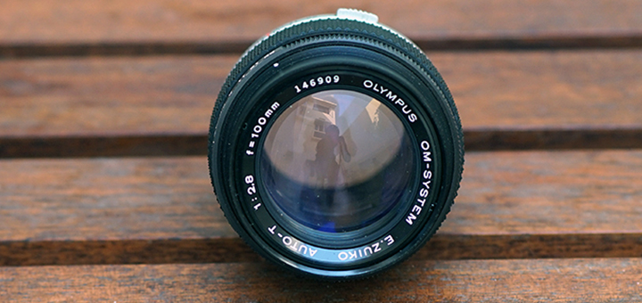
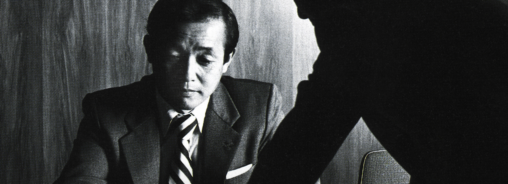
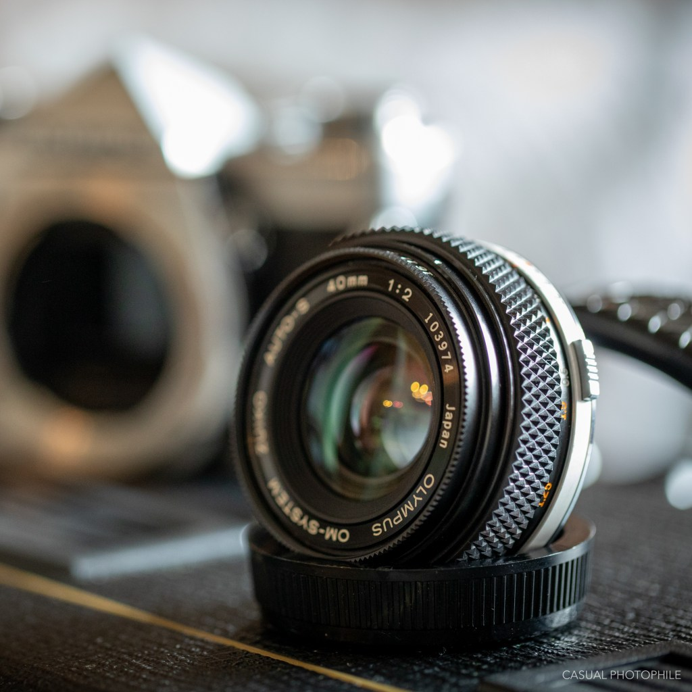
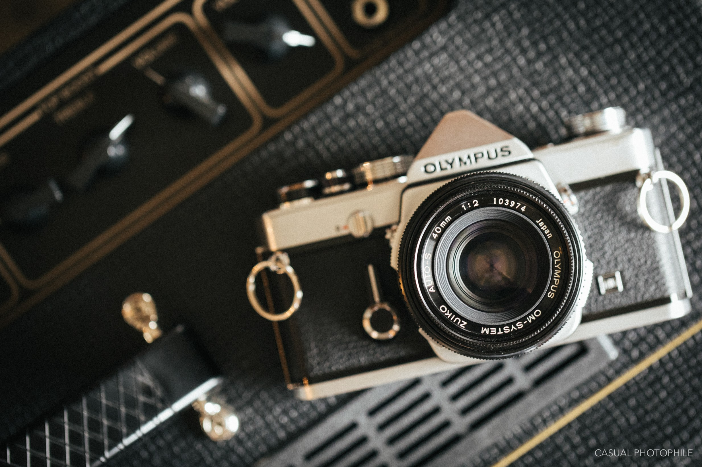
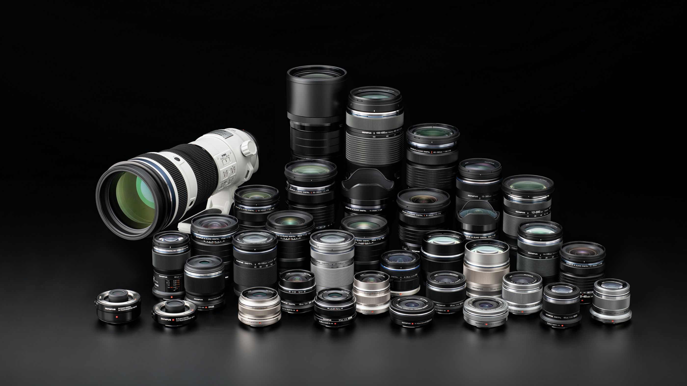

Maitani & Zuiko

We have a saying in Japanese that fire and water are good servants, but bad masters. Although the camera should be an inseparable part of the photographer, it is still a tool. It can be a help or hindrance depending on how it’s used.
If you’re a camera fan in any capacity, you should appreciate Yoshihisa Maitani’s impact on the camera industry of the 20th century. The man was a visionary who helped define the camera world we live in today, and we spent about two-thousand words chronicling his life’s work in an article earlier this year. If you’re not sure about Maitani, our retrospective is a great place to start.
His truly innovative design of the diminutive Olympus OM-1 redefined what a 35mm SLR could be, and his extremely pocketable and inexpensive Olympus XA was a total reimagining of the old-fashioned rangefinder camera. Legendary engineering, innovation, and cult-like status have helped Maitani’s creations survive to this day as tools for the modern film photographer. And while many of his camera designs defined Olympus’ presence in the market for more than forty years, the true beauty and magic of the Olympus brand is found in their Zuiko line of lenses. Maitani believes that lens is the heart of a camera, so he never compromised anything when it comes to lens designing.

The Legendary 40mm F/2 Zuiko
During Maitani’s time as head designer of Olympus, he had more than a few side projects. The one that I’ve always been most fascinated with was his pursuit to design the smallest and most optically stellar standard lens the consumer market had ever seen. Ever cognizant of his lifelong design philosophy that “the lens is the soul of the camera,” he and his team set out to create a lens that would perfectly compliment the OM’s compact size and exceptional performance.
In the early 1980s, traditional SLR camera sales began to decline as more advanced electronic SLRs, point and shoots, and the like began to whet consumers’ appetites. In order to ensure buyers remained interested in their OM line, Maitani made a push to develop ever smaller and better lenses. The smallest and best, was the Olympus Zuiko 40mm F/2. Originally prototyped as a 50mm pancake lens, Maitani and team found that they could reduce its size even further by widening its field of view to 40mm, and so they did. With a true picture angle of 56 degrees and at a dainty 140g weight, his team succeeded in creating something truly special. Designed to fit his exacting standards and personal photographic taste, after years of effort the smallest Zuiko became a reality in 1984. Sadly, the market didn’t respond well and production on the lens is rumored to be limited to just 10,000 units. It was discontinued in 1994.


Boasting six elements in six groups, its multicoated glass matched the best of what could then be found in all Zuiko lenses. In fact, all lenses marked with only the word “Zuiko” on the front feature the best-of-the-times optical multicoating. These are the last of the OM line, they’re the most robust, and they have the best coatings of any Zuiko lens. It's basically the perfect Zuiko, THE Maitani's Zuiko. This lens can go toe-to-toe with lenses that are much more established, like Leica's Elmar and Summicron with its renowed German glass that can break your wallet. But nowadays, this lens can go for very high prices due to its performance and cult-status, making it rather hard to obtain.
Digital Zuikos

After dropping the Zuiko branding for some time, Olympus re-established a new generation of Zuiko lenses for the digital Micro Four-Third (MFT) system.
The line of Zuiko Digital-branded lenses marketed for Four Thirds system digital single-lens reflex cameras consists of the following sets from least to most expensive, separated by marketing grade:
- Standard Grade (kit lenses and compact zooms)
- High Grade (HG, dust and weather sealed, faster apertures, marketed for professionals and advanced amateurs)
- Super High Grade (SHG, dust and weather sealed, prime and constant-aperture zoom lenses marketed towards working professional photographers)
These digital lenses are branded as M.Zuiko. While Maitani did not design any of the digital Zuikos since he retired some time after of his last design, the Olympus XA fitted with F.Zuiko lens, Maitani's design spirit lives in the M.Zuiko lenses. This can be seen from the form factor of the M.Zuikos, which is mostly compact and small while also boasting a competitive spec.